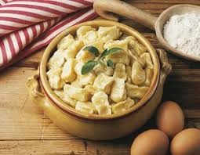
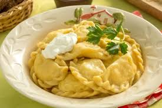
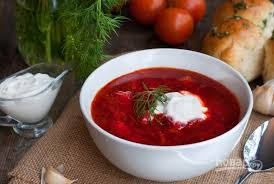

Галушки
Галу́шки (укр. галушки́) — украинское[1][2] национальное тестяное блюдо, представляющее собой отваренные в кипящей воде кусочки теста. Украинские галушки подают как отдельное блюдо (с маслом или со сметаной) или варят суп с галушками. Похожие блюда под другим названием и несколько отличающейся технологией приготовления известны в Чечне и Ингушетии, где есть две разновидности галушек - жур-хьалтамаш (чеч. ахар галнаш) (из кукурузной муки) и хьор-хьалтамаш (из пшеничной муки). Оба вида обязательно подаются в качестве гарнира вместе с черемшовым или чесночным соусом к мясу. В чеченской, ингушской и балкарской кухнях чаще готовят отварное мясо с галушками. Реже готовят запеченное, жареное мясо или мясо на углях. Во всех видах к мясу добавляют галушки с соусом[3]. Также существует их разновидность (как отдельное блюдо) под названием «Ленивые вареники» — для них тесто замешивается с творогом. Подаются обычно со сладкой подливой (сливочное масло с сахаром, сгущённое молоко, или подобное).
Більше інформації у вікіпедіїВареники
Варе́ники (укр. вареники, ʋɐˈrɛneke) — русское[1][2] национальное блюдо, в виде отварных изделий из пресного теста с начинкой из рубленого мяса, овощей, грибов, фруктов, творога, и ягод. С варениками сходны пельмени (ушки, пермени, манты) Восточной России и Сибири, польские перо́ги (польск. pierogi), подкоголи марийской кухни и колдуны Западной России[3], а также множество блюд традиционной китайской кухни. Основное отличие этих блюд в начинках и внешней форме отварных изделий. Итальянские равиоли представляют собой маленькие колдуны с телятиной и готовятся из того же теста, что и лапша, применяемая в обыкновенных и молочных супах, однако мясо в них добавляется варёное.
Борщ
Борщ — разновидность супа на основе свёклы[1], которая придаёт ему характерный красный цвет. У В. И. Даля, в знаменитом словаре, род щей, похлебка из свекольной кваши, на говядине и свинине или со свиным салом[2]. Традиционное блюдо восточных славян[3], основное первое блюдо украинской кухни[4], которое имеет около дюжины разновидностей и получило широкое распространение в национальных кухнях соседних народов[4]: у русских, белорусов (боршч), поляков (barszcz «баршч»), литовцев (barščiai «барщчяй»), румын (borş «борш»)[1][3] и молдаван[5][6] (борш, borş).